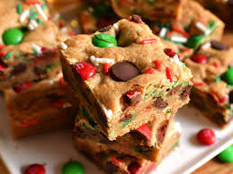

Cookie Bars

Description
These festive Christmas cookie bars are like a holiday
chocolate chip cookie in bar form. They come together
quickly—using just one bowl—and they don't require an
electric mixer. Just mix up the dough, bake, and you'll
be enjoying a delicious Christmas-y treat in no time!
Ingredients
- 1/2 cup unsalted butter, melted
- 3/4 cup firmly packed dark brown sugar
- 1/2 teaspoon salt
- 1 1/2 cups all-purpose flour
Steps
- Preheat the oven to 350 degrees F (180 degrees C). Line an 8x8-inch square pan with enough parchment paper to have overhang on all sides.
- Whisk melted butter, brown sugar, white sugar, salt, and nutmeg together in a large bowl until thoroughly combined. Add in egg and vanilla and mix until thoroughly incorporated. Add in flour and baking soda and mix until just combined. Fold in chocolate chips, M&Ms, and sprinkles.
- Transfer batter into the prepared pan and spread into an even layer. Sprinkle a few more chocolate chips, M&Ms, and sprinkles evenly over the top of the batter.
- Bake in the preheated oven until bars are puffed and begin to turn golden brown on top, 30 to 35 minutes. Remove from the oven; cool completely before cutting into bars.
Recipe Title